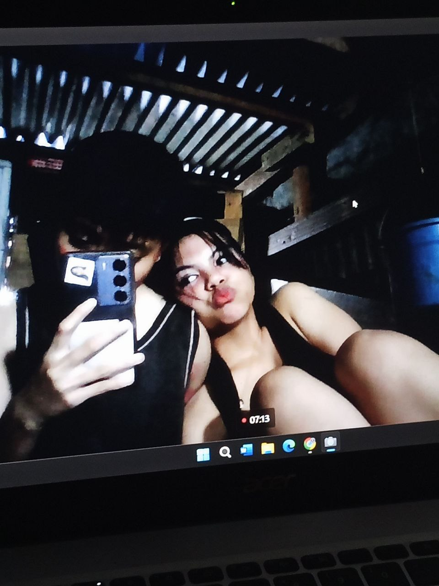

.photo { width: 100%; max-width: 350px; border-radius: 20px; margin: 30px auto; display: block; box-shadow: 0 10px 30px rgba(0,0,0,0.2); }I made this little space on the internet just to remind you how much you mean to me. Thank you for staying, for loving me patiently, and for choosing me every single day. I want to spend my life with you, through all the ordinary and extraordinary moments, always choosing us, always choosing you.
Baby, loving you has been a journey of learning and choosing, not the perfect kind but the real kind, the kind that grows through misunderstandings, apologies, laughter, and quiet moments where I realize I still want you just the same if not more. I have loved you in my healing, in my mistakes, in my becoming, and every version of me has found home in you. With you, love is not just a feeling I hold but a promise I keep, to listen better, to love deeper, and to stay even when it gets hard, because my heart knows that every day with you is a choice I will always make.
This is only a page, but my love for you is bigger than anything words or screens can hold.
Forever yours,
Wifey 🤍